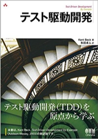
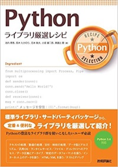
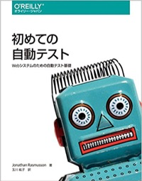
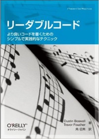

鉄は熱いうちに打て
=============================
PyLadies「テストをまなぼう」に登壇しました¶
2018-02-22
今日は、 PyLadies Tokyo Meetup #29 テストをまなぼう で、登壇しました。
PyLadies Tokyo Meetup #29 テストをまなぼう を公開しました！ https://t.co/szes8XI1Nc #PyLadiesTokyo
— せりーな(se-lina) (@se_lina08) 2018年1月25日
オファー¶
ことの発端は、 PyLadies Tokyo 秋合宿 2017 でした。
亀「最近、仕事で結構テストばっかり書いてますよ〜」
Ma「ほー。PyLadiesでテストテーマに登壇しない？」
亀「いぇーい！」
Ma「いぇーい！」
※ Maは [まーや(Maaya) <https://twitter.com/maaya8585)さん
という感じで、ノリで受けてしまいました。テヘッ。
現状把握¶
仕事でテストをたくさん書いていたのは本当です。しかし、誰かにテストについて話せるかと言われれば完全にNOでした。
そんなわけで安請け合いしてしまったので、勉強することにしました。まずは本を読んで勉強しよう！と思ったのですが、 テストって書き方の紹介くらいで詳しく書いてある本がほとんどない（汗） という事実に気が付きました。
勉強開始¶
そんなか、ちょうど、 テスト駆動開発 が再翻訳されて再出版された直後だったので早速購入しました。
サンプルが途中までJavaだったので、 Pythonで書き換えながら 勉強しました。 かなりわかりやすい本ですね。この本1冊やるとテスト駆動開発の考えが身につきます。
t_wadaさんの動画もPyLadiesのメンバーの方に教えていただいたので見ました。
結局、テスト駆動開発だとPython感が薄いかなと思って、以下の本も勉強しました。
  勉強しながら、ブログも書きました。
くろはこ先生のブログも読みました。
不安な日々と魔法の言葉¶
不安だ。どうしよう。資料が作れない。と、当初は全く書けませんでした。 しかし、資料の最初に 魔法の言葉 を書いたらスラスラと筆が進みました。以下、魔法の言葉。
誤解されないように言っておきたいことがあります。せっかく来てくれたのにゴメンナサイ。
私、そんなにテスト詳しくないです！¶
仕事で普通に書くくらい。レビューに出したらいろいろ指摘を受けます。
このイベントのオファーが来たので、渡りに船！と思い勉強しました。 私も目的がないと何もしない人なので、勉強の理由をいつも探しています。 良い機会をいただけて、PyLadiesに感謝しています。
皆様も次のイベントで興味がある事の講師をやってみてはどうでしょうか。圧倒的に成長できます。
尊敬する tokibitoさん が言いました。 「勉強すればできる」 と。
今日、解決しなかったら、一緒に勉強していきましょう！
別に講師だからって全知全能の神である必要はないんです。できる範囲で価値を生み出せたらいいんです。この話を主張したおかげで、次のMeetupの講師の依頼を受けてくれる人も出たようでよかったです。
（PyLadiesの） イベント駆動学習 ですね。この流れが広まっていくといいですね。
喉の調子が。。¶
しかし、緊張と花粉症と風邪治りかけのため、喉の調子が良くなくてマスクをして挑んですいませんでした。PyLadiesのシャツも来ていくの忘れるし、緊張しすぎですね。次はもっとうまくできると思う。たぶん。
続いて、@okusama27 のセッションです。Pythonでの単体試験とハンズオン 始まりました！ #PyLadiesTokyo pic.twitter.com/ZeQmiwbEyw
— PyLadiesTokyo (@PyLadiesTokyo) 2018年2月22日
これが前回書いた2月も忙しかった理由です。
すべての予定が終わって、緊張の糸が切れたので、今度は後回しにしておいた翻訳に挑戦していこうと思います。
最後に¶
このような機会を与えてくださったPyLadies Tokyoのスタッフの皆様。おいでいただいた方々。快く会場を提供していただいたビープラウドの皆様。ありがとうございました！！